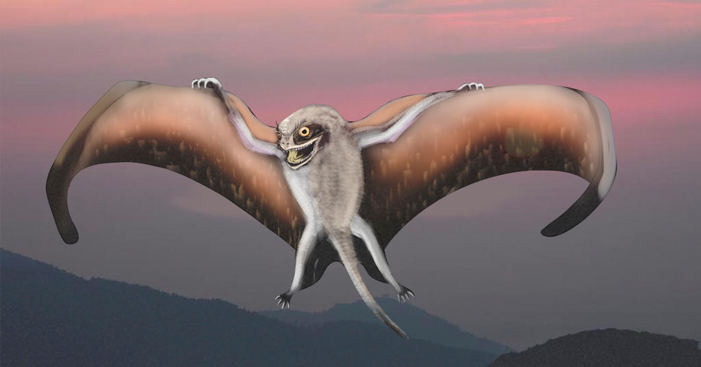
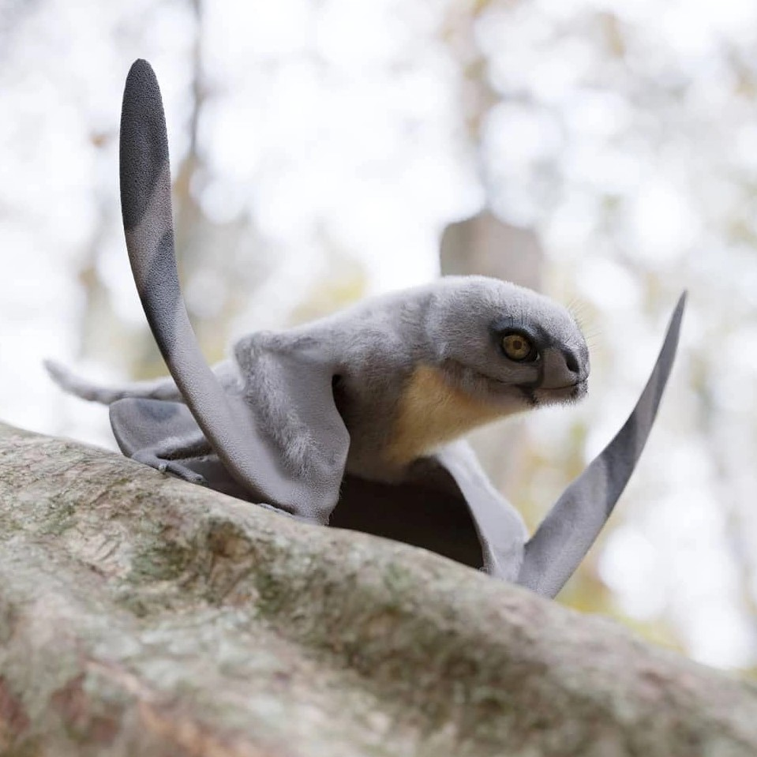
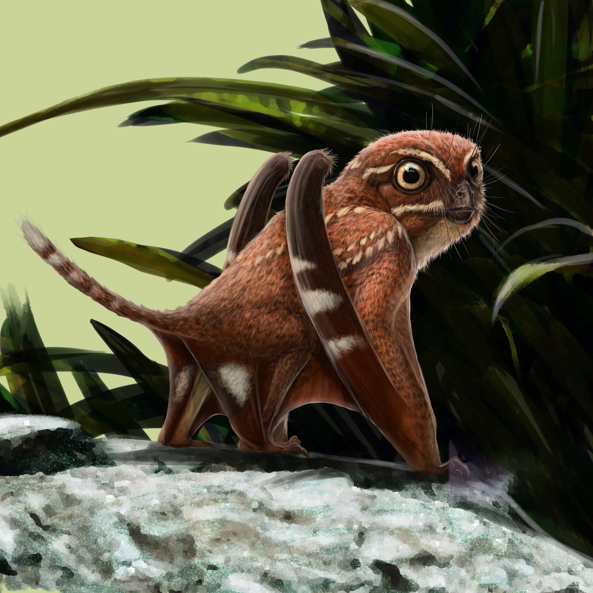
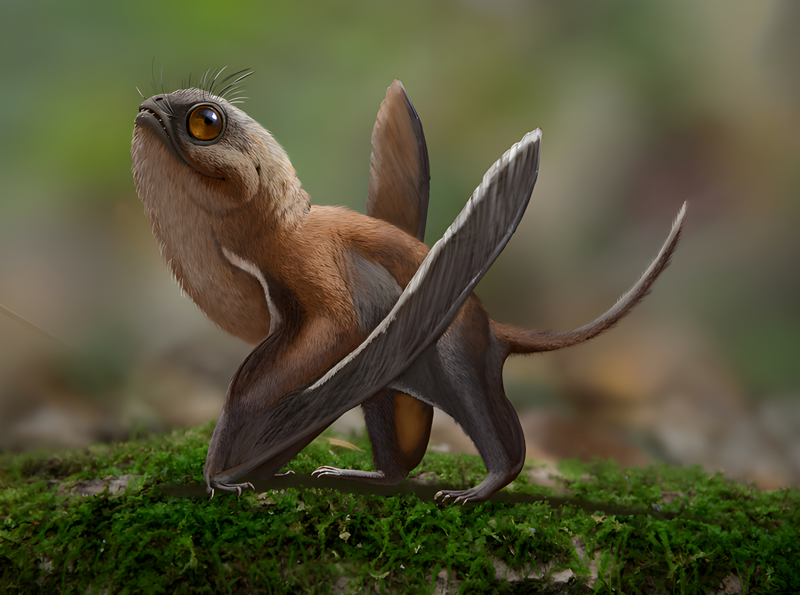
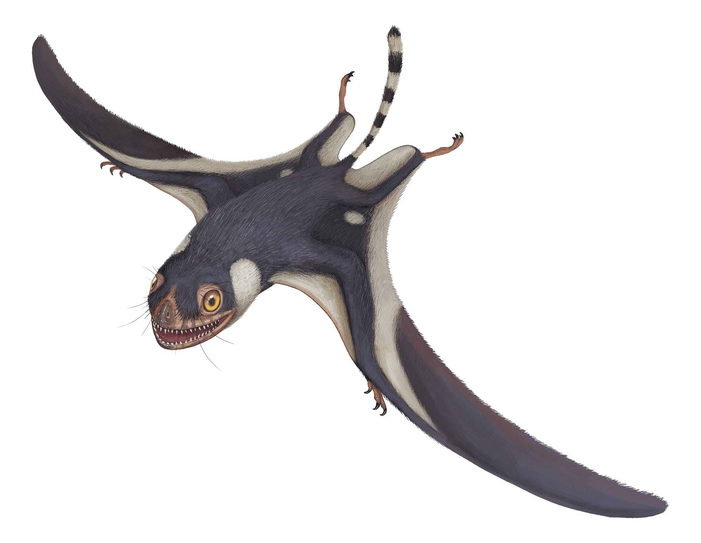
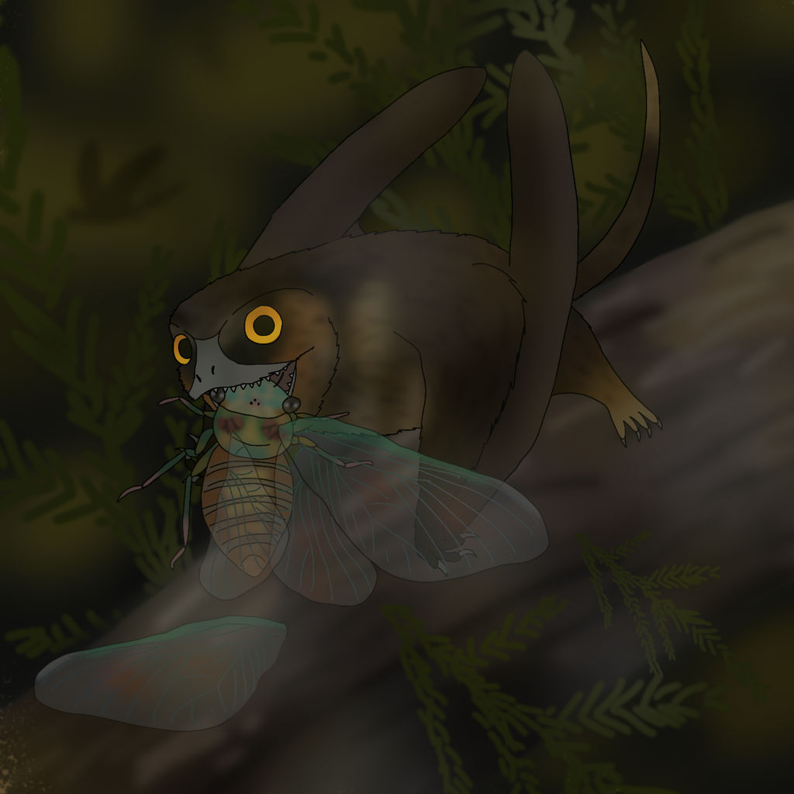
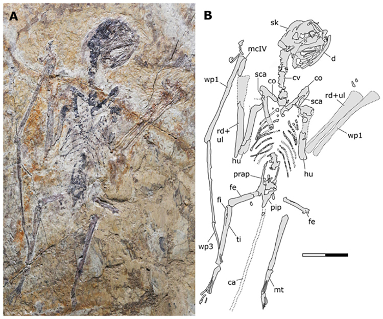
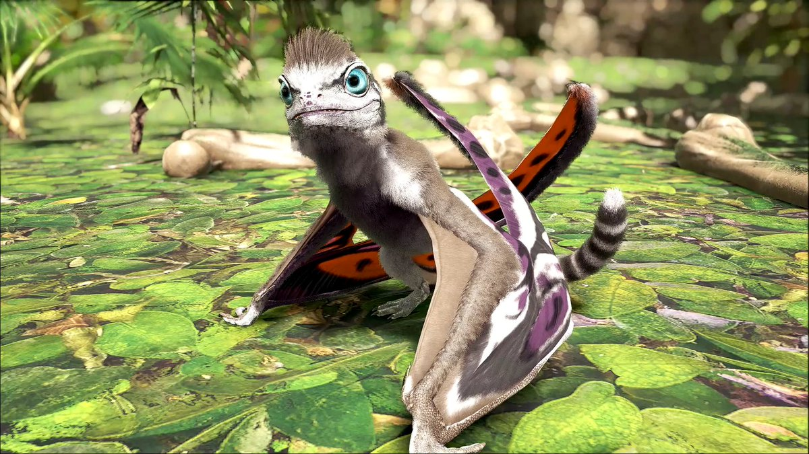

Sinomacrops
Dực long mini kỷ Phấn trắng
Tổng quan
Kỷ
Cretaceous
Họ
Anurognathidae
Chi
Sinomacrops
Dài
40 cm
Sải cánh
90 cm
Thức ăn

Sinomacrops là một chi thằn lằn bay thuộc họ Anurognathidae gồm một loài duy nhất được biết đến, Sinomacrops bondei. Loài này sống vào giữa kỷ Jura đến đầu kỷ Phấn trắng.
Nguồn: wikipedia.org
Phân bố
Phía đông bắc Trung Quốc
Thông tin thêm về Sinomacrops
Kỷ nguyên
Sinomacrops sống cách đây 160-122 triệu năm vào giữa kỷ Jura đến đầu kỷ Phấn trắng.
Phân bố
Hóa thạch 160 triệu năm tuổi của sinh vật này được tìm thấy tại hệ tầng Tiaojishan ở tỉnh Hà Bắc, phía đông bắc Trung Quốc.
Tên khoa học
Sinomacrops bắt nguồn từ gốc từ tiếng Hy Lạp cổ đại, Sino~ đề cập đến Trung Quốc, macro~ ( makros ) nghĩa là lớn và ops nghĩa là mắt/khuôn mặt. Cái tên Sinomacrops liên quan đến cả đôi mắt to và khuôn mặt rộng đặc trưng của họ Anurognathidae, cũng như nguồn gốc từ Trung Quốc của loài động vật này. Tên loài Sinomacrops bondei nhằm vinh danh nhà cổ sinh vật học Niels Bonde.
Kích thước
Chúng có kích thước nhỏ hơn nhiều so hầu hết họ hàng sống cùng thời, thường chỉ dài từ 20 đến 40 cm. Ƭất cả các loài Anurognathid từng được biết đến đều có sải cánh không vượt quá 90cm.
Ngoại hình
Sinomacrops sở hữu khuôn mặt mập mạp với đôi mắt to và một chiếc cằm ngắn, trông giống những con chim Porgs trong bộ phim khoa học viễn tưởng Star Wars: The Last Jedi của Disney.
Hàm và răng vẫn có một số đặc điểm độc đáo khiến nó khác biệt với các loài Anurognathids khác. Ba chiếc răng đầu tiên của hàm trên, một xương ở hàm trên, xếp rất chặt. Ngoài ra, xương hàm dưới cho thấy hộp sọ và hàm hơi nhọn khi nhìn từ trên xuống, chứ không phải hình chữ U như nhiều loài Anurognathids khác. Xương đùi đặc biệt ngắn, bằng khoảng một nửa chiều dài của xương chày. Cuối cùng, không giống như hầu hết các loài Anurognathids khác có đuôi rất ngắn, đuôi của Sinomacrops ít nhất cũng dài bằng chân.
Chế độ ăn và săn mồi
Sinomacrops bondei được cho là sử dụng đôi cánh của nó để bay lượn trong các khu rừng nguyên sinh và săn các loài côn trùng nhỏ trên không.
Khám phá
Hóa thạch 160 triệu năm tuổi của sinh vật được tìm thấy tại hệ tầng Tiaojishan ở tỉnh Hà Bắc, phía đông bắc Trung Quốc. Đây là mẫu vật đầu tiên thuộc họ Anurognathid vẫn còn lưu giữ hộp sọ nguyên vẹn, cho phép các nhà khoa học hiểu rõ hơn về sự tiến hóa và phát sinh loài của nhóm thằn lằn bay cổ đại này.
Đến nay, mới chỉ có ba loài Anurognathid được mô tả ở Trung Quốc. Phát hiện mới bởi vậy có ý nghĩa rất quan trọng. Mẫu vật hóa thạch duy nhất của Sinomacrops bondei hiện được lưu giữ tại Bảo tàng Cổ sinh vật học Cẩm Châu ở miền trung Trung Quốc.
Sự tuyệt chủng
Hiện tại, không có thông tin chính thức nào cho biết Sinomacrops đã tuyệt chủng như thế nào. Tuy nhiên, giống như nhiều loài khủng long khác, Sinomacrops có thể đã tuyệt chủng vào cuối kỷ Phấn trắng, khoảng 65 triệu năm trước đây, sau sự kiện tuyệt chủng khủng long lớn nhất trong lịch sử Trái đất - sự kiện tuyệt chủng K-Pg.
